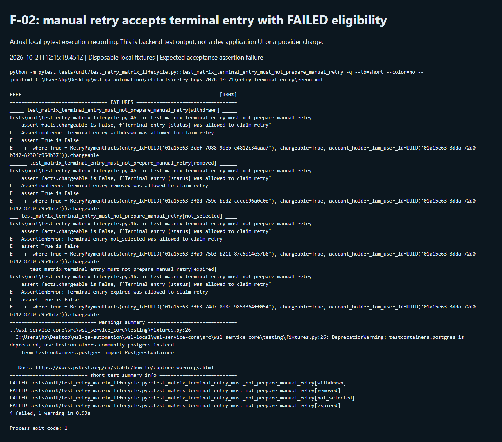

Payment retries · QA-RETRY-02 · Bug report · Not in Jira
Manual retry preparation can accept terminal entries that retain FAILED charge eligibility
21 October 2026 · P2 suggested · Local application + disposable Postgres
All four bug reports · Full 110-case execution · Download bug report
Summary
Reproduced: RET-067, RET-078
retry_payment_prepare does not independently reject Withdrawn, Removed, Not selected or Expired entries when the charge store still exposes a retryable FAILED charge.
Impact: A stale or inconsistently exposed FAILED charge can bypass entry lifecycle expectations at the manual-retry gate. Production reachability and provider collection are not established by these tests.
Evidence scope and limits
The DB reproduction intentionally bypasses application withdrawal orchestration. Normal application withdrawal + alternate promotion stopped the old scheduled retry in a separate passing test; existing withdrawn dev fixtures returned HTTP 409. Do not interpret this finding as every ordinary withdrawal continuing to charge.
Priorities are QA suggestions. No Jira ticket, application fix, refund, or shared dev database/policy modification was made.
Recording and execution record
Actual backend test execution recording. This records a fresh pytest run with output streamed into a browser terminal viewer. It is not the dev application UI or a live processor attempt.
Started 2026-10-21T12:15:19.451Z; finished 2026-10-21T12:15:33.455Z. Exit code 1 is expected because the acceptance assertion reproduces the defect.
Recorded output · Fresh rerun XML · Execution metadata
Command and exact captured output
python -m pytest tests/unit/test_retry_matrix_lifecycle.py::test_matrix_terminal_entry_must_not_prepare_manual_retry -q --tb=short --color=no --junitxml=C:\Users\hp\Desktop\wsl-qa-automation\artifacts\retry-bugs-2026-10-21\retry-terminal-entry\rerun.xml
FFFF [100%]
================================== FAILURES ===================================
_____ test_matrix_terminal_entry_must_not_prepare_manual_retry[withdrawn] _____
tests\unit\test_retry_matrix_lifecycle.py:46: in test_matrix_terminal_entry_must_not_prepare_manual_retry
assert facts.chargeable is False, f'Terminal entry {status} was allowed to claim retry'
E AssertionError: Terminal entry withdrawn was allowed to claim retry
E assert True is False
E + where True = RetryPaymentFacts(entry_id=UUID('01a15e63-3def-7088-9deb-e4812c34aaa7'), chargeable=True, account_holder_iam_user_id=UUID('01a15e63-3dda-72d0-b342-8230fc954b37')).chargeable
______ test_matrix_terminal_entry_must_not_prepare_manual_retry[removed] ______
tests\unit\test_retry_matrix_lifecycle.py:46: in test_matrix_terminal_entry_must_not_prepare_manual_retry
assert facts.chargeable is False, f'Terminal entry {status} was allowed to claim retry'
E AssertionError: Terminal entry removed was allowed to claim retry
E assert True is False
E + where True = RetryPaymentFacts(entry_id=UUID('01a15e63-3f8d-759e-bcd2-ccecb96a0c0e'), chargeable=True, account_holder_iam_user_id=UUID('01a15e63-3dda-72d0-b342-8230fc954b37')).chargeable
___ test_matrix_terminal_entry_must_not_prepare_manual_retry[not_selected] ____
tests\unit\test_retry_matrix_lifecycle.py:46: in test_matrix_terminal_entry_must_not_prepare_manual_retry
assert facts.chargeable is False, f'Terminal entry {status} was allowed to claim retry'
E AssertionError: Terminal entry not_selected was allowed to claim retry
E assert True is False
E + where True = RetryPaymentFacts(entry_id=UUID('01a15e63-3fa0-75b3-b211-87c5d14e57b6'), chargeable=True, account_holder_iam_user_id=UUID('01a15e63-3dda-72d0-b342-8230fc954b37')).chargeable
______ test_matrix_terminal_entry_must_not_prepare_manual_retry[expired] ______
tests\unit\test_retry_matrix_lifecycle.py:46: in test_matrix_terminal_entry_must_not_prepare_manual_retry
assert facts.chargeable is False, f'Terminal entry {status} was allowed to claim retry'
E AssertionError: Terminal entry expired was allowed to claim retry
E assert True is False
E + where True = RetryPaymentFacts(entry_id=UUID('01a15e63-3fb3-74d7-8d8c-9853364ff054'), chargeable=True, account_holder_iam_user_id=UUID('01a15e63-3dda-72d0-b342-8230fc954b37')).chargeable
============================== warnings summary ===============================
..\wsl-service-core\src\wsl_service_core\testing\fixtures.py:26
C:\Users\hp\Desktop\wsl-qa-automation\wsl-local\wsl-service-core\src\wsl_service_core\testing\fixtures.py:26: DeprecationWarning: testcontainers.postgres is deprecated, use testcontainers.community.postgres instead
from testcontainers.postgres import PostgresContainer
-- Docs: https://docs.pytest.org/en/stable/how-to/capture-warnings.html
=========================== short test summary info ===========================
FAILED tests/unit/test_retry_matrix_lifecycle.py::test_matrix_terminal_entry_must_not_prepare_manual_retry[withdrawn]
FAILED tests/unit/test_retry_matrix_lifecycle.py::test_matrix_terminal_entry_must_not_prepare_manual_retry[removed]
FAILED tests/unit/test_retry_matrix_lifecycle.py::test_matrix_terminal_entry_must_not_prepare_manual_retry[not_selected]
FAILED tests/unit/test_retry_matrix_lifecycle.py::test_matrix_terminal_entry_must_not_prepare_manual_retry[expired]
4 failed, 1 warning in 0.93s
Process exit code: 1
Steps to reproduce
- Local application probe: expose a FAILED charge on a terminal entry. Repeat with Withdrawn, Removed, Not selected and Expired.
- Call retry_payment_prepare with Tour Manager authorization and a new request ID.
- Assert chargeable=False and that no execute is staged. Observe the failing status variants.
- Database probe: create an entry with a declined charge in disposable Postgres, then withdraw through the repository directly.
- Call real retry_payment_prepare in that transaction; observe chargeable=True and execute staging.
- Compare with the complete application withdrawal + alternate promotion safe-path test, which cancels the charge and emits no old-entry scheduled execute.
Expected versus actual
| Expected | Actual |
|---|---|
| chargeable=False; no execute command staged for a terminal entry. | chargeable=True in four terminal-status unit variants; repository-only withdrawal also allowed a new retry in Postgres. |
Technical investigation
Source: competition/application/entries.py:660 — retry_payment_prepare
F-02 — Manual retry preparation lacks an entry lifecycle guard - Matrix: RET-067 and RET-078. Suggested priority: P2 for a defensive payment gate, with production reachability investigation required. - Source: `wsl-competition-service/src/competition/application/entries.py:660`, `retry_payment_prepare`. - Preconditions: a terminal entry still has an exposed FAILED charge eligible for manual retry. - Reproduction A: parameterized application tests expose such a charge on Withdrawn, Removed, Not selected, and Expired entries; call manual retry preparation as Tour Manager. - Reproduction B: in disposable Postgres, create and decline a charge, call the withdrawal repository directly, then call real manual retry preparation in the transaction. - Expected: refuse the retry and stage no execute command for a terminal entry. - Actual: preparation returned `chargeable=True`; execute was staged. Four unit variants and one real-DB acceptance assertion failed. - Cause: preparation checks the exposed charge ID and claims the charge, without checking the current entry lifecycle. - Critical scope distinction: reproduction B deliberately bypasses the application withdrawal orchestration. The complete application withdrawal path cancels charge eligibility and emits a release. A separate real-DB test running application withdrawal, alternate promotion, and the retry worker **passed**, with the old charge CANCELLED and no new scheduled execute. Fresh retries against the existing withdrawn dev fixtures also returned HTTP 409. This is not evidence that every ordinary withdrawal continues charging. - Evidence: `lifecycle.xml`, `regressions-db.xml`; supporting safe-path evidence in `alternate-db.xml` and live retry JSON. - Backend direction: enforce lifecycle eligibility at the transactional retry claim, then recheck at execution where practical. Preserve idempotent release and reconcile in-flight payment outcomes. A stale FAILED row must not be enough to charge a removed entrant.
Visual evidence

Acceptance criteria for a fix
- Reject manual retry for all terminal entry states even when a stale FAILED charge remains.
- Keep eligibility checks and retry claim in the appropriate transaction/lock scope.
- Verify ordinary withdrawal cancellation, alternate promotion, concurrent execute/release, and paid-entry refusal.
Raw evidence and matrix traceability
- lifecycle.xml
- regressions-db.xml
- alternate-db.xml
- test_retry_matrix_lifecycle.py
- test_retry_matrix_regressions.py
- RET-067: complete matrix result
- RET-078: complete matrix result
5 original failed native assertions
test_matrix_terminal_entry_must_not_prepare_manual_retry[withdrawn]
status = <EntryStatus.WITHDRAWN: 'withdrawn'>
@pytest.mark.parametrize('status',[EntryStatus.WITHDRAWN,EntryStatus.REMOVED,EntryStatus.NOT_SELECTED,EntryStatus.EXPIRED])
async def test_matrix_terminal_entry_must_not_prepare_manual_retry(status):
entry=_detail(status=status,retryable_charge=True)
facts=await _prepare(entry,_charge_for(entry))
> assert facts.chargeable is False, f'Terminal entry {status} was allowed to claim retry'
E AssertionError: Terminal entry withdrawn was allowed to claim retry
E assert True is False
E + where True = RetryPaymentFacts(entry_id=UUID('01a15b29-eb7e-7469-bf85-ae933a314753'), chargeable=True, account_holder_iam_user_id=UUID('01a15b29-eb04-753a-a0c8-e0fcbff39ce2')).chargeable
tests\unit\test_retry_matrix_lifecycle.py:46: AssertionErrortest_matrix_terminal_entry_must_not_prepare_manual_retry[removed]
status = <EntryStatus.REMOVED: 'removed'>
@pytest.mark.parametrize('status',[EntryStatus.WITHDRAWN,EntryStatus.REMOVED,EntryStatus.NOT_SELECTED,EntryStatus.EXPIRED])
async def test_matrix_terminal_entry_must_not_prepare_manual_retry(status):
entry=_detail(status=status,retryable_charge=True)
facts=await _prepare(entry,_charge_for(entry))
> assert facts.chargeable is False, f'Terminal entry {status} was allowed to claim retry'
E AssertionError: Terminal entry removed was allowed to claim retry
E assert True is False
E + where True = RetryPaymentFacts(entry_id=UUID('01a15b29-ed34-728d-a53e-c344005dd2f8'), chargeable=True, account_holder_iam_user_id=UUID('01a15b29-eb04-753a-a0c8-e0fcbff39ce2')).chargeable
tests\unit\test_retry_matrix_lifecycle.py:46: AssertionErrortest_matrix_terminal_entry_must_not_prepare_manual_retry[not_selected]
status = <EntryStatus.NOT_SELECTED: 'not_selected'>
@pytest.mark.parametrize('status',[EntryStatus.WITHDRAWN,EntryStatus.REMOVED,EntryStatus.NOT_SELECTED,EntryStatus.EXPIRED])
async def test_matrix_terminal_entry_must_not_prepare_manual_retry(status):
entry=_detail(status=status,retryable_charge=True)
facts=await _prepare(entry,_charge_for(entry))
> assert facts.chargeable is False, f'Terminal entry {status} was allowed to claim retry'
E AssertionError: Terminal entry not_selected was allowed to claim retry
E assert True is False
E + where True = RetryPaymentFacts(entry_id=UUID('01a15b29-ed43-74a2-aece-9ef188e266c9'), chargeable=True, account_holder_iam_user_id=UUID('01a15b29-eb04-753a-a0c8-e0fcbff39ce2')).chargeable
tests\unit\test_retry_matrix_lifecycle.py:46: AssertionErrortest_matrix_terminal_entry_must_not_prepare_manual_retry[expired]
status = <EntryStatus.EXPIRED: 'expired'>
@pytest.mark.parametrize('status',[EntryStatus.WITHDRAWN,EntryStatus.REMOVED,EntryStatus.NOT_SELECTED,EntryStatus.EXPIRED])
async def test_matrix_terminal_entry_must_not_prepare_manual_retry(status):
entry=_detail(status=status,retryable_charge=True)
facts=await _prepare(entry,_charge_for(entry))
> assert facts.chargeable is False, f'Terminal entry {status} was allowed to claim retry'
E AssertionError: Terminal entry expired was allowed to claim retry
E assert True is False
E + where True = RetryPaymentFacts(entry_id=UUID('01a15b29-ed52-76b4-bd22-531686aac529'), chargeable=True, account_holder_iam_user_id=UUID('01a15b29-eb04-753a-a0c8-e0fcbff39ce2')).chargeable
tests\unit\test_retry_matrix_lifecycle.py:46: AssertionErrortest_withdrawal_blocks_manual_retry_of_failed_charge
db = <sqlalchemy.ext.asyncio.session.AsyncSession object at 0x000001E85F02F770>
async def test_withdrawal_blocks_manual_retry_of_failed_charge(db):
org=bound_org(db);(entry_id,)=await _entries_charging(db,1);factory=session_factory(db.bind)
await _decline(factory,org,entry_id,failure_class='needs_new_method',hours_ago=1)
async with bound_to(factory,org)() as s,s.begin():
store=SqlEventStore(s);detail=await store.entry_detail(entry_id)
await store.withdraw_entry(entry_id,version=detail.version,write=WithdrawalWrite(stage=list(WithdrawalStage)[0],reason='QA matrix withdrawal',decided_by_user_id=None))
facts=await retry_payment_prepare(roles=frozenset({'tour_manager'}),entry_id=entry_id,request_id='matrix-'+str(uuid7()),store=store,charges=SqlChargeRetries(s),commands=OutboxCommander(s),now=dt.datetime.now(dt.UTC))
> assert facts.chargeable is False, 'Real withdrawn FAILED charge accepted a new retry and staged an execute command'
E AssertionError: Real withdrawn FAILED charge accepted a new retry and staged an execute command
E assert True is False
E + where True = RetryPaymentFacts(entry_id=UUID('01a15b24-473b-74d5-bb80-9a0c2a2c7809'), chargeable=True, account_holder_iam_user_id=UUID('01a15b24-473b-74d5-bb80-9a0b0b140832')).chargeable
tests\integration\test_retry_matrix_regressions.py:24: AssertionError